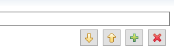
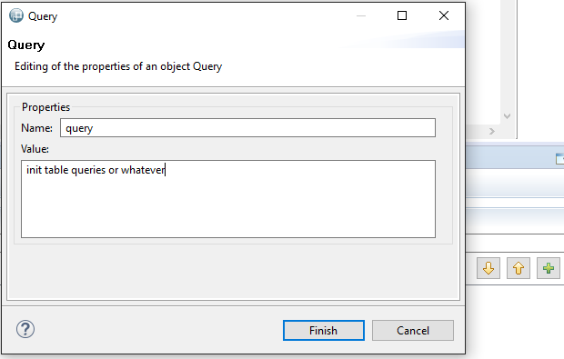

Queries Table Initialization
Once your project is created (see Create a project), you are able to display an empty "Queries Table". This table will allow you to write the name and the value of your queries and to consult their results (once their value is valid and the simulation is launched).

Encode the first Query
However, the first query will not be encodable by using the adding function offered by this table. To encode the first query, follow these steps :
- Go to the graphical modeling area and click on the background of the modeling area
- Go to the "properties" tab situated below the modeling area and select the "Model" subtab

- Click on the "+" button in order to add a query manually from the Properties editor 
- Write the name and the value of the first query and click on "Finish" 
- Finally, go back to your Queries Table. You can notice that the first query has been added